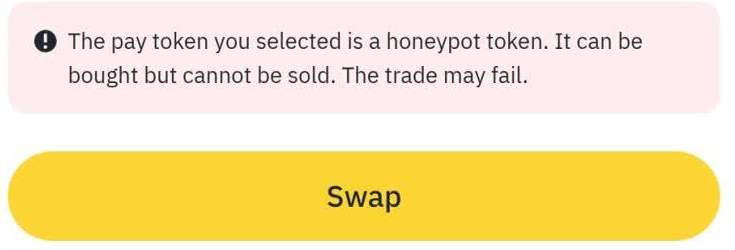

Guide · Token risk · September 2026
Honeypot tokens: why you can buy but can't sell
The price can look great. Your wallet can show the tokens. But getting your money back may be impossible.
You bought the token. The transaction succeeded. The tokens are in your wallet.
Now you try to sell — and the transaction fails.
You try again. Same result.
This is one of the most frustrating things that can happen to a crypto user, and it's often the result of a honeypot token.
The trick isn't necessarily in the price or the chart.
It's in the smart contract.
The good news is that many of the mechanisms used to create a honeypot can be checked before you buy. That check can take seconds.
First, what is a honeypot?
Think of a honeypot as a door that opens in one direction.
You can walk in.
You can't walk back out.
In crypto, the "door" is the token's smart contract. A token on a blockchain such as Ethereum or BNB Smart Chain is controlled by a contract, and that contract contains the rules for transferring the token between addresses.
When you buy a token, you're interacting with those rules. When you sell it, you're interacting with them again.
And the contract can treat those two actions differently.
A malicious token can therefore be written so that:
BUY → allowed
SELL → blocked
That's the basic idea behind a honeypot.
How can a token stop you from selling?
There isn't just one way to create a honeypot. Some contracts use very obvious restrictions. Others are more subtle.
1. Selling is blocked
The contract can check who is trying to sell and refuse the transaction unless the address is specifically allowed.
You may be able to buy normally, while only certain wallets are allowed to sell.
2. The selling tax is extremely high
The contract may technically allow you to sell, but take an enormous percentage of the transaction.
For example, a token might have a normal-looking 2% fee when you buy. The sell fee could be 99%.
At that point, selling is technically possible, but economically useless.
3. The tax can be changed
This is one of the reasons you shouldn't look only at the tax rate you see right now.
A contract might start with a 2% sell tax. Later, an address with the necessary permissions could change it to 50%, 90% or even 100%.
So the important question isn't only:
"What is the tax?"
It is also:
"Who can change the tax?"
4. Transfers can be paused
Some contracts contain an emergency switch that can stop transfers.
While the switch is off, everything may appear normal. If it is activated later, token transfers can stop.
5. Wallets can be blacklisted
A contract may contain a blacklist. An address can be added to that list, after which the token can no longer be transferred from that wallet.
This can leave you holding tokens that still appear in your wallet but cannot actually be moved.
Why do honeypots look convincing?
This is what makes them dangerous.
A token can look completely normal from the outside. You might see:
- a rising price chart
- lots of holders
- recent transactions
- a token logo
- a balance in your wallet
- a dollar value attached to that balance
None of those things proves that you can sell.
A price chart tells you what trades have happened. A wallet tells you that you own the tokens.
Neither one answers the most important question:
Can this token actually be sold by my wallet?
That's why a honeypot can look attractive right up until the moment you try to leave.
The moment people usually discover the problem
Imagine you find a new token.
The chart is going up. You buy $100 worth. The purchase goes through. Your wallet now shows the tokens. Everything looks fine.
A few minutes later, you decide to sell.
The transaction fails.
You try again. Still nothing.
You increase the gas. It fails again.
The tokens haven't disappeared. They're still sitting in your wallet. But if the contract prevents your address from selling, that balance may not be useful to you.

This is why checking before buying is so important.
How to check a token before you buy
There isn't one magic test that proves a token is safe. Instead, look at several different signals.
The contract's own indicators
Answers: can a sell be simulated, is there a tax, can it be changed, can transfers be paused, is there a blacklist, can the owner mint or edit balances.
Doesn't answer: what the owner intends to do next.
Real sells by ordinary wallets
Answers: whether anyone other than the deployer has successfully got out.
Doesn't answer: whether your address is treated the same way.
Who owns the supply
Answers: how concentrated the holdings are, and how much the price depends on a few wallets.
Doesn't answer: whether selling is blocked at all.
A small test sell
Answers: whether your wallet can actually get out, right now.
Doesn't answer: anything before you have already bought — and it costs gas either way.
1. Check the token's contract
Security scanners can inspect a token's contract and report things such as:
- whether selling can be simulated successfully
- whether buy or sell taxes exist
- whether those taxes can be changed
- whether transfers can be paused
- whether blacklist functionality exists
- whether the owner has special permissions
- whether additional tokens can be minted
- whether other unusual controls are present
This is the type of information that the SaveSaveSaveSave scanner is designed to surface.
Paste the contract address, select the correct blockchain, and look at the individual findings rather than relying only on one overall label.
Most importantly, pay attention to what the scanner could not determine.
"Unknown" is not the same thing as "safe."
2. Look for real sells
You can also inspect the token's activity on a block explorer.
You're looking for evidence that ordinary wallets have actually been able to sell the token. This is different from simply seeing lots of buys.
A token can have plenty of buying activity while still preventing ordinary holders from selling.
If you see many purchases but very little evidence of successful sells by regular wallets, that's a reason to investigate further. It isn't, by itself, absolute proof of a honeypot.
3. Check who owns the supply
Look at the largest holders. If a small number of wallets control a large percentage of the supply, that creates additional risk — those wallets may be able to have a major effect on the market if they sell.
And remember: a token can be completely sellable and still be a terrible investment.
Honeypot detection and overall token-risk detection are not the same thing.
4. If you've already bought it, test a small sell
If you've already purchased a token and you're unsure whether you can sell, testing a small amount can provide useful information. Do this while your position is still small.
There will be a network fee, and a failed transaction may still cost gas.
But it can answer a very practical question:
Can my wallet actually get out?
This is a fallback check — not something you should have to rely on when a contract can be inspected beforehand.
What does a "clean" result actually mean?
This part is important.
A scanner finding no known honeypot restriction does not mean that the token is safe.
It means something much narrower:
The available checks did not identify the specific restrictions they were designed to detect.
There is a big difference. A token could pass a honeypot check and still have serious problems.
The owner could change something later
If the contract gives an owner permission to change the sell tax, the current tax might be perfectly normal. That doesn't mean the permission isn't a risk.
A scanner can tell you that the setting is changeable. It cannot know what the owner will do tomorrow.
Liquidity could disappear
A token can be completely sellable one minute and become difficult or impossible to sell after liquidity is removed. That's a different problem from a honeypot.
The project itself could be questionable
A contract can have perfectly normal transfer mechanics while the people behind the project make false promises, abandon the project or otherwise behave irresponsibly.
Contract analysis cannot tell you everything about the people behind a token.
Some information may simply be unavailable
Sometimes a security check cannot obtain enough information to reach a reliable conclusion.
That's why INSUFFICIENT DATA should not quietly become a green light.
If the system doesn't know, the honest answer is:
We don't know.
One question to remember
When you see a token going up, it's natural to ask:
"How high could this go?"
Before that, ask something more basic:
"Can I get out?"
Look at the contract. Look at the selling activity. Look at the permissions. Look at what can be changed.
And if a security check cannot determine something, treat it as unknown rather than assuming everything is fine.
A honeypot isn't always obvious from the chart.
Sometimes the most important information about a token isn't visible on the chart at all.
It's in the code.
This article is for educational purposes only. It explains token-contract mechanics and ways to inspect them before interacting with a token. It is not financial advice and does not guarantee that any token is safe.